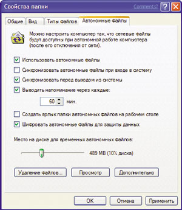
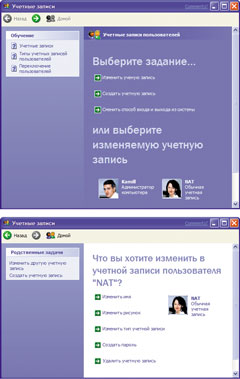
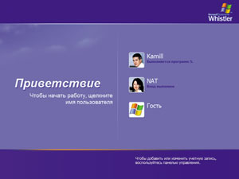

Камилл Ахметов
Стратегия безопасности Windows XP
Модель безопасности Windows XP Professional основана на понятиях аутентификации и авторизации. При аутентификации проверяются идентификационные данные пользователя, а при авторизации - наличие у него прав доступа к ресурсам компьютера или сети. В Windows XP Professional также имеются технологии шифрования, которые защищают конфиденциальные данные на диске и в сетях: например, EFS (Encrypting File System), технология открытого ключа.
Аутентификация
Регистрируясь на компьютере для получения доступа к ресурсам локального компьютера или сети, пользователь должен ввести свое имя и пароль. В Windows XP Professional возможна единая регистрация для доступа ко всем сетевым ресурсам. Таким образом, пользователь может войти в систему с клиентского компьютера по единому паролю или смарт-карте и получить доступ к другим компьютерам домена без повторного ввода идентификационных данных.
Главный протокол безопасности в доменах Windows 2000 - Kerberos версии 5. Для аутентификации на серверах под управлением Windows NT 4.0 и доступа к ресурсам доменов Windows NT клиенты Windows XP Professional используют протокол NTLM. Компьютеры с Windows XP Professional, не принадлежащие к домену, также применяют для аутентификации протокол NTLM.
Используя Windows XP Professional в сети с активным каталогом (Active Directory), можно управлять безопасностью регистрации с помощью параметров политики групп, например, ограничивать доступ к компьютерам и принудительно завершать сеансы работы пользователей спустя заданное время. Можно применять предварительно сконфигурированные шаблоны безопасности, соответствующие требованиям к безопасности данной рабочей станции или сети. Шаблоны представляют собой файлы с предварительно сконфигурированными параметрами безопасности, которые можно применять на локальном компьютере или импортировать в групповые политики активного каталога. Эти шаблоны используются в неизменном виде или настраиваются для определенных нужд.
Авторизация
Авторизация позволяет контролировать доступ пользователей к ресурсам. Применение списков управления доступом (access control list, ACL) и прав доступа NTFS гарантирует, что пользователь получит доступ только к нужным ему ресурсам, например, к файлам, дискам (в том числе сетевым), принтерам и приложениям. С помощью групп безопасности, прав пользователей и прав доступа можно одновременно управлять безопасностью как на уровне ресурсов, так и на уровне файлов, папок и прав отдельных пользователей.
Группы безопасности
Группы безопасности упрощают управление доступом к ресурсам. Можно приписывать пользователей к группам безопасности, а затем предоставлять этим группам права доступа. Можно добавлять пользователей к группам безопасности и удалять их оттуда в соответствии с потребностями этих пользователей.
Оснастка MMC Computer Management позволяет создавать учетные записи пользователей и помещать их в локальные группы безопасности. Можно предоставлять пользователям права доступа к файлам и папкам и определять действия, которые пользователи могут выполнять над ними. Можно разрешить и наследование прав доступа. При этом права доступа, определенные для каталога, применяются ко всем его подкаталогам и находящимся в них файлам.
Среди групп безопасности, локальных для домена и компьютера, имеется ряд предварительно сконфигурированных групп, в которые можно включать пользователей.
Администраторы (Administrators) обладают полным контролем над локальным компьютером и правами на совершение любых действий. При установке Windows XP Professional для этой группы создается и назначается встроенная учетная запись Администратор (Administrator). Когда компьютер присоединяется к домену, по умолчанию к группе Администраторы добавляется группа Администраторы домена (Domain Administrators).
Опытные пользователи (Power Users) обладают правами на чтение и запись файлов не только в личных папках, но и за их пределами. Они могут устанавливать приложения и выполнять многие административные действия. У членов этой группы такой же уровень прав доступа, что и у групп Пользователи (Users) и Опытные пользователи (Power Users) в Windows NT 4.0.
Пользователи (Users) в отношении большей части системы имеют только право на чтение. У них есть право на чтение и запись только файлов их личных папок. Пользователи не могут читать данные других пользователей (если они не находятся в общей папке), устанавливать приложения, требующие модификации системных каталогов или реестра, и выполнять административные действия. Права пользователей в Windows XP Professional более ограниченны по сравнению с Windows NT 4.0.
Гости (Guests) могут регистрироваться по встроенной учетной записи Guest и выполнять ограниченный набор действий, в том числе выключать компьютер. Пользователи, не имеющие учетной записи на этом компьютере, или пользователи, чьи учетные записи отключены (но не удалены), могут зарегистрироваться на компьютере по учетной записи Guest. Можно устанавливать права доступа для этой учетной записи, которая по умолчанию входит во встроенную группу Guests. По умолчанию учетная запись Guest отключена.
Можно сконфигурировать списки управления доступом (ACL) для групп ресурсов или групп безопасности и по мере необходимости добавлять/удалять из них пользователей или ресурсы, что облегчает управление правами доступа и их аудит. Это также позволяет реже изменять ACL. Можно предоставить пользователям права на доступ к файлам и папкам и указать действия, которые можно выполнять с ними. Можно также разрешить наследование прав доступа; при этом права доступа к некоторой папке применяются и к ее подкаталогам и находящимся в них файлам.
При работе с Windows XP Professional в составе рабочей группы или в изолированном режиме вам предоставляются права администратора, и у вас есть все права по отношению ко всем функциям безопасности ОС. Если компьютер под управлением Windows XP Professional включен в сеть, параметры безопасности определяет сетевой администратор.
Политика групп
Параметры политики групп позволяют назначать ресурсам права доступа, а также предоставлять права доступа пользователям. Это нужно для того, чтобы требовать запуска определенных приложений только в заданном контексте безопасности (тем самым снижая риск воздействия на компьютер нежелательных приложений, например, вирусов) и конфигурировать различные права доступа для множества клиентских компьютеров. Можно сконфигурировать права доступа на эталонном компьютере, который будет использован как базовый образ для установки на другие рабочие станции, гарантируя, таким образом, стандартизованное управление безопасностью даже в отсутствие Active Directory.
Функции аудита позволяют обнаруживать попытки отключить или обойти защиту ресурсов.
Можно задействовать предварительно сконфигурированные шаблоны безопасности, соответствующие требованиям безопасности для данной рабочей станции или сети. Шаблоны безопасности - это файлы с предварительно установленными параметрами безопасности, которые применяют к локальному компьютеру или импортируют в групповые политики активного каталога (Active Directory). Шаблоны безопасности используются в неизменном виде или настраиваются в соответствии с определенными задачами.
Шифрование
EFS (Encrypting File System) позволяет зашифровать данные на жестком диске. Риск кражи портативных компьютеров особенно велик, а с помощью EFS можно усилить безопасность путем шифрования данных на жестких дисках портативных компьютеров компании. Эта предосторожность защищает информацию и идентификационные данные от несанкционированного доступа.
Корпоративная безопасность
Windows XP Professional поддерживает ряд функций защиты избранных файлов, приложений и других ресурсов. В их числе списки управления доступом (ACL), группы безопасности и групповая политика, а также средства конфигурирования и управления этими функциями. В совокупности они обеспечивают мощную, но гибкую инфраструктуру управления доступом в корпоративных сетях.
Windows XP поддерживает тысячи относящихся к безопасности параметров конфигурации, которые можно применять и по отдельности. В Windows XP также есть предопределенные шаблоны безопасности, обычно используемые без изменений или как основа для особой настройки конфигурации безопасности. Эти шаблоны безопасности применяются при:
- создании ресурса, такого как общая папка или файл; при этом вы вправе воспользоваться заданными по умолчанию ACL или настроить их в соответствии со своими потребностями;
- распределении пользователей по стандартным группам безопасности, таким как Users, Power Users и Administrators, и принятии заданных по умолчанию параметров ACL;
- использовании предоставляемых ОС шаблонов групповой политики - Basic (основной), Compatible (совместимый), Secure (безопасный) или Highly Secure (высокобезопасный).
Каждая из особенностей системы безопасности Windows XP - списки ACL, группы безопасности и групповая политика - имеет параметры по умолчанию, которые разрешается изменять в соответствии с требованиями организации. Предприятия также вправе применять соответствующие средства для реализации и настройки управления доступом. Многие из этих средств, такие как оснастки Microsoft Management Console, представляют собой компоненты Windows XP Professional, другие поставляются в составе комплекта ресурсов Windows XP Professional Resource Kit.
Управляемый доступ к сети
Windows XP содержит встроенную подсистему безопасности для предотвращения вторжений. Ее работа базируется на ограничении прав любого, кто пытается получить доступ к компьютеру из сети до привилегий гостевой учетной записи. Взломщикам или вообще не удастся получить доступ к компьютеру и перебором паролей получить дополнительные привилегии, или они получат только ограниченный гостевой доступ.
Управление сетевой проверкой подлинности
Все большее число систем под управлением Windows XP Professional подключается к Интернету напрямую, а не через домены. Поэтому продуманная система управления доступом (в том числе устойчивыми паролями и разрешениями, сопоставленными учетными записями) важна как никогда ранее. Для обеспечения безопасности следует избегать анонимных параметров управления доступом, обычно связанных с открытыми средами, подобными Интернету.
Вот почему в Windows XP Professional по умолчанию все пользователи, вошедшие по сети, работают под учетной записью Guest. Это исключает для злоумышленника возможность войти в систему через Интернет под локальной учетной записью Администратор (Administrator), у которой нет пароля.
Упрощенное совместное использование ресурсов
Модель совместного использования и безопасности для локальных учетных записей позволяет выбрать модель безопасности на основе применения исключительно гостевой учетной записи (Guest) либо классическую (Classic) модель безопасности. В гостевой модели при любых попытках войти в систему локального компьютера через сеть применяется только гостевая учетная запись. В классической модели пользователи при доступе через сеть входят в систему локального компьютера под своими учетными записями. На компьютерах в составе домена эта политика не применяется, а по умолчанию используется гостевая учетная запись.
Если гостевая учетная запись существует и ей назначен пустой пароль, сетевые пользователи смогут войти в систему и получить доступ к любому ресурсу, разрешенному для доступа учетной записи Guest.
При включенной политике "force network logons using local accounts to authenticate as Guest" локальные учетные записи должны аутентифицироваться как учетная запись Guest при доступе через сеть. Эта политика служит для ограничения разрешений локальной учетной записи, обращающейся к системным ресурсам на другом сетевом компьютере.
Кроме того, на компьютерах, поддерживающих модель упрощенной защиты общих ресурсов, диалоговое окно Security Properties заменено упрощенным диалоговым окном Shared Documents Properties.
Ограничение на учетные записи с пустыми паролями
Для безопасности пользователей, не защитивших свою учетную запись паролем, в Windows XP Professional такие учетные записи разрешено применять только для входа в систему компьютера с его консоли. По умолчанию учетные записи с пустыми паролями запрещено применять для входа в систему удаленно по сети и вообще для любых других действий по входу в систему, кроме как с физической консоли компьютера. Например, нельзя задействовать службу вторичного входа в систему (RunAs - запуск от имени) для запуска программ под учетной записью с пустым паролем локального пользователя.
Назначение пароля локальной учетной записи устраняет указанное ограничение на вход через сеть, а также предоставляет ей доступ по сети к любым ресурсам, на которые у нее есть права.
Если ваш компьютер не расположен в физически защищенном помещении, рекомендуется назначать пароли всем локальным учетным записям пользователей. Несоблюдение этого требования ведет к тому, что любой пользователь, получивший физический доступ к компьютеру, может войти в систему под учетной записью без пароля. Это особенно важно для переносных компьютеров, на которых следует предусмотреть устойчивые пароли для всех локальных учетных записей пользователей.
Указанное ограничение не относится к доменным учетным записям, а также к локальной гостевой учетной записи. Если учетная запись Guest с пустым паролем существует, под ней можно войти в систему и обратиться к любому ресурсу, разрешенному ей для доступа.
Если требуется отключить ограничение на вход через сеть без пароля, надо соответствующим образом настроить локальную политику безопасности (Local Security Policy).
Шифрованная файловая система
Дополнительные функции шифрованной файловой системы (Encrypting File System, EFS) существенно обогатили Windows XP Professional, обеспечив дополнительную гибкость для корпоративных пользователей при развертывании решений безопасности, основанных на шифровании файлов с данными.
Любой злоумышленник, имеющий физический доступ к компьютеру, может загрузить на нем другую ОС, обойти защиту основной ОС и получить доступ к конфиденциальным данным. Шифрование конфиденциальных файлов средствами EFS обеспечивает дополнительную защиту. Данные зашифрованного файла останутся недоступными, даже если атакующий получит полный доступ к среде хранения данных компьютера.
Только полномочные пользователи и назначенные агенты восстановления данных в состоянии расшифровывать файлы. Пользователи с другими учетными записями, обладающие разрешениями для файла - даже разрешением на передачу прав владения (Take Ownership), не в состоянии открыть его. Администратору доступ к содержимому файла также закрыт, если только он не назначен агентом восстановления данных. При попытке несанкционированного доступа к зашифрованному файлу система откажет в доступе.
Архитектура EFS
EFS базируется на технологии шифровании с открытым ключом и использует архитектуру CryptoAPI. Стандартная (по умолчанию) конфигурация EFS не требует никакого административного вмешательства: вы вправе выполнять шифрование файлов сразу же после установки системы. EFS автоматически создает пару ключей шифрования и сертификат пользователя, если они не были созданы ранее.
В качестве алгоритма шифрования EFS использует DESX (Expanded Data Encryption Standard) или 3DES (Triple-DES). Поставщики услуг криптографии поддерживают два алгоритма: RSA Base и RSA Enhanced - для создания сертификатов EFS и для шифрования симметричных ключей шифрования.
Если зашифровать папку, все файлы и подпапки в ней шифруются автоматически. Рекомендуется шифрование именно на уровне папок, чтобы в процессе работы не появлялись незашифрованные временные файлы.
EFS и NTFS
Шифрованная файловая система (EFS) защищает конфиденциальные данные в файлах на томах NTFS. EFS - основная технология шифрования и расшифровки файлов на томах NTFS. Открывать файл и работать с ним может только пользователь, его зашифровавший. Это чрезвычайно важно для пользователей переносных компьютеров: даже если взломщик получит доступ к потерянному или украденному компьютеру, он не сможет открыть зашифрованные файлы. В Windows XP шифрованная файловая система также поддерживает автономные файлы и папки (Offline Files and Folders).
Зашифрованный файл останется недоступным для просмотра в исходном виде, даже если атакующий обойдет системную защиту, например, загрузив другую ОС. EFS обеспечивает устойчивое шифрование по стандартным алгоритмам и тесно интегрирована с NTFS. EFS в Windows XP Professional предоставляет новые возможности совместного использования зашифрованных файлов или отключения агентов восстановления данных, а также облегчает управление посредством групповой политики и служебных программ командной строки.
Как работает EFS
EFS позволяет сохранить конфиденциальность информации на компьютере в условиях, когда люди, имеющие физический доступ к компьютеру, могут преднамеренно или неумышленно скомпрометировать ее. EFS чрезвычайно удобна для обеспечения конфиденциальности данных на мобильных компьютерах или на компьютерах, на которых работают несколько пользователей, т. е. таких системах, которые могут подвергаться атакам, предусматривающим обход ограничений списков ACL.
В совместно используемой системе атакующий обычно получает несанкционированный доступ, загружая другую ОС. Злоумышленник также может захватить компьютер, вынуть жесткий диск, поместить его на другой компьютер и получить доступ к файлам. Однако если у него нет ключа расшифровки, зашифрованный средствами EFS файл будет выглядеть как бессмысленный набор символов.
Поскольку EFS тесно интегрирована с NTFS, шифрование и расшифровка выполняются незаметно ("прозрачно") для пользователя. При открытии файла EFS автоматически расшифровывает его по мере чтения данных с диска, а при записи - шифрует данные при записи на диск. Работая с зашифрованным файлом, вы можете даже не догадываться, что он зашифрован (при условии, что у вас есть соответствующие права).
В стандартной конфигурации EFS позволяет зашифровать файл прямо из Проводника Windows без какого-либо вмешательства администратора. С точки зрения пользователя шифрование файла или папки - это просто назначение ему определенного атрибута.
Конфигурирование EFS
По умолчанию система поддерживает работу EFS. Разрешается шифровать файлы, для которых имеется разрешение на изменение. Поскольку в EFS для шифрования файлов применяется открытый ключ, нужно создать пару ключей открытый/закрытый и сертификат с открытым ключом шифрования. В EFS разрешены сертификаты, подписанные самим владельцем, поэтому вмешательство администратора для нормальной работы не требуется.
Если применение EFS не соответствует требованиям организации или если есть файлы, которые нельзя шифровать, существует много способов отключить EFS или нужным образом конфигурировать ее.
Для работы с EFS всем пользователям требуются сертификаты EFS. Если в организации нет инфраструктуры открытого ключа (Public Key Infrastructure, PKI), применяются подписанные самим владельцем сертификаты, которые автоматически создаются ОС. При наличии центров сертификации сертификаты EFS обычно выпускают именно они. Если вы используете EFS, обязательно предусмотрите план восстановления данных при сбое системы.
Что разрешается шифровать
На томах NTFS атрибут шифрования разрешается назначать отдельным файлам и папкам с файлами (или подпапками). Хотя папку с атрибутом шифрования и называют "зашифрованной", сама по себе она не шифруется, и для установки атрибута пары ключей не требуется. При установленном атрибуте шифрования папки EFS автоматически шифрует:
- все новые файлы, создаваемые в папке;
- все незашифрованные файлы, скопированные или перемещенные в папку;
- все вложенные файлы и подпапки (по особому требованию);
- автономные файлы.
Шифрование базы данных автономных файлов
В Windows XP можно шифровать базу данных автономных файлов для локальной защиты кэшируемых документов от воровства компьютера, а также обеспечения дополнительной безопасности локально кэшируемых данных. В Windows 2000 этой функции не было - она предусматривает шифрование кэшируемых файлов.
Например, вы вправе активно использовать автономные файлы, при этом конфиденциальность данных обеспечивается автоматически. Как администратор отдела технической поддержки вы можете задействовать эту возможность, чтобы обезопасить все локально кэшируемые документы. Автономные файлы - превосходная защита от потери конфиденциальных данных при захвате мобильного компьютера.
Указанная функция поддерживает шифрование и расшифровку всей автономной базы данных. Для конфигурирования порядка шифрования автономных файлов нужны административные привилегии. Чтобы зашифровать автономные файлы, откройте папку Мой компьютер (My Computer) и в меню Сервис (Tools) выберите команду Свойства папки (Folder Options), в открывшемся окне свойств на вкладке Автономные файлы (Offline Files) установите флажок Шифровать автономные файлы для защиты данных (Encrypt Offline Files To Secure Data) (рис. 1).
|  | Рис. 1. Настройка шифрования автономных файлов.
|
Удаленные операции EFS на общих файлах и Web-папках
Можно шифровать и расшифровывать файлы, расположенные в Web-папках Web Distributed Authoring and Versioning (распределенная система хранения файлов с доступом через Web), или WebDAV. У Web-папок много преимуществ по сравнению с общими файлами, и Microsoft рекомендует максимально широко применять их для удаленного хранения шифрованных файлов.
Web-папки требуют меньше внимания от администраторов и безопаснее, чем общие файлы. Web-папки также обеспечивают безопасное хранение и доставку шифрованных файлов через Интернет средствами стандартного протокола HTTP. Чтобы использовать общие файлы для удаленных операций EFS, требуется доменная среда Windows 2000 или более поздних версия Windows, так как при шифровании и расшифровке пользовательских файлов EFS работает от имени пользователя посредством протокола делегирования полномочий в Kerberos.
Основное отличие удаленных операций EFS с общими файлами и файлами в Web-папках - то, в каком месте эти операции выполняются. Если файлы хранятся в общих файлах, все операции EFS выполняются на компьютере, где расположен файл. Так, если вы подключились к общему сетевому файлу и пытаетесь открыть ранее зашифрованный файл, он расшифровывается на компьютере, где хранится, а затем передается открытым текстом по сети на ваш компьютер.
При хранении файла на Web-папках все операции EFS выполняются на локальном компьютере. Скажем, при подключении к Web-папке и попытке открыть зашифрованный файл последний пересылается по сети в зашифрованном виде на локальный компьютер и уже там расшифровывается системой EFS. Входящий и исходящий трафик Web-папок - это необработанные данные, которые, даже перехваченные атакующим, остаются зашифрованными и совершенно для него бесполезны.
Такое различие в выполнении операций EFS объясняет, почему общие файлы требуют больших усилий со стороны администраторов, чем Web-папки.
EFS с Web-папками устраняет необходимость в специализированном ПО для безопасного совместного использования зашифрованных файлов пользователями и организациями. Файл может храниться в свободном доступе на файловых серверах в интрасети или в Интернете и при этом оставаться надежно защищенным средствами EFS.
Службы сертификации
Службы сертификации - это компонент базовой ОС, позволяющий ей выполнять функции центра сертификации (certification authority, CA), или ЦС, в том числе выпускать цифровые сертификаты и управлять ими. Windows XP Professional поддерживает многоуровневые иерархии ЦС и сети ЦС с перекрестными доверительными отношениями, а также изолированные и интерактивные ЦС.
Хранилища сертификатов с открытыми ключами
Windows XP Professional хранит сертификаты с открытыми ключами в личном (Personal) хранилище сертификатов. Они хранятся открытым текстом, так как это общедоступная информация. Сертификаты имеют цифровую подпись ЦС для предотвращения изменения.
Сертификаты пользователя расположены в папке Documents and Settings\<имя_пользователя>\ApplicationData\Microsoft\
SystemCertificates\My\Certificates профиля пользователя. Эти сертификаты записываются в локальном реестре при каждом входе в систему компьютера. Для перемещаемых профилей сертификаты обычно хранятся в определенном месте (не на компьютере) и "следуют" за пользователем при его входе в систему любого компьютера в домене.
Хранение закрытых ключей
Поставщики услуг криптографии (cryptographic service provider, CSP) - как Base CSP, так и Enhanced CSP, хранят закрытые ключи в профиле пользователя в папке %SystemRoot%\Documents and Settings\<имя_пользователя>\
Application Data\Microsoft\Crypto\RSA. В перемещаемых профилях пользователей закрытый ключ располагается в папке RSA на контроллере домена и загружается на компьютер только на время его работы.
Поскольку закрытые ключи надо защищать, все файлы в папке RSA автоматически шифруются случайным симметричным ключом - основным ключом пользователя (user's master key). Ключ длиной в 64 символа создается надежным генератором случайных чисел. На базе основного ключа создаются ключи 3DES, используемые для шифрования закрытых ключей. Основной ключ автоматически генерируется и периодически возобновляется.
При хранении на диске основной ключ защищается по алгоритму Triple DES с применением ключа, созданного на основе вашего пароля. Основной ключ применяется для автоматического шифрования всех файлов в папке RSA по мере их создания.
Автоматический запрос сертификата пользователя
В Windows 2000 имелась функция автоматического запроса сертификата пользователя. Автоматический запрос сертификата компьютера и контроллера домена поддерживается и групповой политикой Microsoft Active Directory. Автоматический запрос сертификата компьютера чрезвычайно полезен для упрощения подключений по IPSec или L2TP/IPSec VPN к серверам с Windows XP со службой Routing и Remote Access и другим серверам.
Эта функция снижает совокупную стоимость владения и упрощает управление жизненным циклом сертификатов для пользователей и администраторов. Автоматический запрос сертификата смарт-карты и ЦС с самоподписанными сертификатами обеспечивают дополнительную защиту пользователям предприятий, где требуется усиленная безопасность.
Запросы в ожидании и обновление сертификатов
Автоматический запрос сертификата пользователя в Windows XP Professional обеспечивает также запросы в ожидании и обновление сертификатов. После запроса сертификата вручную или автоматически на сервере сертификации Windows .NET Server CA ожидается разрешение администратора на выпуск сертификата или завершение процесса верификации. После одобрения и выпуска сертификата механизм автоматического запроса автоматически установит сертификат.
В процессе обновления сертификатов пользователя с истекшим сроком действия также применяется механизм автоматического запроса. Сертификаты автоматически обновляются от имени пользователя, причем процедура определяется параметрами шаблонов сертификатов в Active Directory.
По умолчанию сертификаты и ключи защищены. Для дополнительной защиты вы вправе применить дополнительные меры безопасности, в том числе выполнять экспорт закрытых ключей и хранить их в защищенном месте.
Управление реквизитами
Управление реквизитами в Windows XP состоит из трех компонентов: интерфейс пользователя для ввода реквизитов, хранилище имен и паролей пользователя и связка ключей (keyring).
Интерфейс пользователя для ввода реквизитов
Приложение отображает интерфейс пользователя для ввода реквизитов, если компонент аутентификации возвратил ошибку проверки подлинности. (Это касается только приложений, в которых такой интерфейс реализован.)
Вам предлагается ввести имя пользователя и пароль в соответствующем диалоговом окна или выбрать сертификат X.509 из хранилища My Store. Приложение также может предусматривать флажок Remember my password (Запомнить пароль), при установке которого реквизиты запоминаются.
Сохранение реквизитов поддерживают только интегрированные с Windows XP компоненты проверки подлинности (например, Kerberos, NTLM, SSL). Для базовой проверки подлинности отображается интерфейс пользователя для ввода реквизитов, но возможности сохранения реквизитов нет.
Хранилище реквизитов пользователя
Реквизиты перемещаемых профилей хранятся в защищенном хранилище Stored User Names and Passwords (Сохраненные имя и пароль пользователя). Порядок доступа к реквизитам определяют параметры локальной защиты (Local Security Settings). Реквизиты хранятся на основе целевой информации, возвращенной ресурсом.
Когда установлен флажок Remember my password в интерфейсе запроса реквизитов, реквизиты сохраняются в наиболее общей форме. Скажем, после обращения к определенному серверу в домене реквизиты сохраняются в форме *.domain.com. При сохранении разных реквизитов для разных серверов в этом домене указанная запись не перезаписывается, а создаются более конкретные записи о целевой информации.
При обращении к ресурсу с применением интегрированного компонента проверки подлинности последний выберет среди сохраненных реквизитов пользователей наиболее близко соответствующие целевой информации, возвращенной ресурсом. Найдя нужные реквизиты, компонент ничего не будет спрашивать у пользователя. В случае неудачи поиска реквизитов приложению, которое пыталось обращаться к ресурсу, возвращается ошибка аутентификации.
Приложение, обращающееся к ресурсу, не обязательно должно реализовывать интерфейс пользователя для ввода реквизитов. Если оно взаимодействует с интегрированным компонентом проверки подлинности, последний и выполняет поиск реквизитов. В действительности сохраненные реквизиты сможет получить только компонент проверки подлинности.
Для Windows XP Professional в составе домена используется классический интерфейс пользователя для ввода реквизитов, а в Windows XP Home Edition и Windows XP Professional в рабочей группе - новый дружественный интерфейс пользователя (рис. 2).
|  | Рис. 2. Новый дружественный интерфейс для ввода реквизитов пользователя.
|
Связка ключей
Связка ключей (keyring) позволяет вручную управлять сохраненными реквизитами. Для работы с ней служит элемент User Accounts Панели управления.
В связке ключей отображается список сохраненных реквизитов. При выделении реквизита в поле описания в нижней части окна отображается его краткое описание. Можно добавлять новые реквизиты, редактировать и удалять существующие.
При добавлении реквизитов система представит диалоговое окно, похожее на интерфейс пользователя для ввода реквизитов, и попросит указать целевую информацию. В целевой информации разрешается использовать символы подстановки в виде звездочки (*).
Редактирование реквизитов позволяет самостоятельно изменить целевую информацию или сами реквизиты. Здесь можно изменить имя пользователя и пароль на сервере. Не разрешается применять интерфейс пользователя для ввода реквизитов и редактирования реквизитов, созданных конкретным приложением. Например, не удастся отредактировать реквизиты паспорта. Но вы вправе удалять любые реквизиты. Возможность сохранять реквизиты обычно определяется в групповой политике.
Чтобы разработчики могли использовать механизм сохранения реквизитов, API запроса реквизитов и другие базовые API описаны в соответствующем комплекте Platform Software Development Kit (SDK).
Быстрое переключение пользователей
Быстрое переключение пользователей в Windows XP Professional доступно, только когда компьютер работает в составе рабочей группы или изолированно. Если компьютер присоединен к домену, параметры входа в систему компьютера определяются политикой, заданной администратором. На компьютерах с Windows XP Professional, которые не работают в составе домена, разрешается переключаться между сессиями разных пользователей без выхода из системы и закрытия приложений.
Названные возможности обеспечивает технология поддержки и хранения пользовательских сессий, аналогичная той, что применяется в терминальной службе Microsoft Windows 2000 Terminal Services. Смена пользователя выполняется буквально в мгновение ока "горячими клавишами" я+L или через меню выключения компьютера. В результате не будет закрыто ни одно приложение, а значит, не нужно ломать голову над тем, сохранять ли файлы другого пользователя - вся рабочая обстановка будет сохранена такой, какая она есть. Очередному пользователю Windows выведет окно приглашения, которое, кстати, легко настроить и оформить картинками по своему вкусу (рис. 3).
|  | Рис. 3. Окно приглашения пользователю.
|
Разумеется, на сохранение каждого рабочего сеанса потребуется столько оперативной памяти, сколько нужно для хранения приложений, выполняемых в сеансах, плюс еще дополнительно 2 Мбайт на каждый сеанс. Поэтому для надежной поддержки нескольких пользователей рекомендуется компьютер с объемом ОЗУ не менее 128 Мбайт. Приложения, сохраняемые в фоновых сессиях, продолжают работать - скажем, почтовая программа другого пользователя будет продолжать принимать почту! Если система настроена на переход в "спящий" режим (hibernation mode) после приостановки работы, то все сеансы будут сохранены на жестком диске и восстановятся после включения компьютера.
Быстрое переключение пользователей разрешено для версий Windows XP Home Edition или Windows XP Professional на изолированном компьютере или компьютере в составе рабочей группы. При присоединении компьютера под управлением Windows XP Professional к домену эта функция отключается.
Личная конфиденциальность
Возможности обеспечения личной конфиденциальности в Windows XP Professional такие же, как и в Windows XP Home Edition. Они различаются при работе в домене или в составе рабочей группы и в изолированном режиме. В домене применяется назначенная администратором политика.
Доступ к Интернету - Internet Connection Firewall
Межсетевой экран Internet Connection Firewall в Windows XP Professional обеспечивает защиту настольных и переносных компьютеров при подключении к Интернету - особенно в случае постоянных подключений, таких как кабельные модемы и DSL.
Групповая политика в ICF
Характерная функция ICF в Windows XP Professional - зависящая от места групповая политика. Это удобно для мобильных пользователей, желающих обеспечить безопасность при работе на переносных компьютерах в местах общественного подключения к Интернету: в гостиницах, аэропортах и т. п.
Когда компьютер с Windows XP Professional работает в составе домена, администратор домена обычно создает групповую политику, запрещающую поддержку ICF в корпоративной сети. Это облегчает работу как пользователя, так и администратора. Когда пользователь вернется домой или подключится к Интернету в общественном месте, межсетевой экран ICF снова заработает, так как указанная политика в той сети не действует.
Как работает межсетевой экран
Такую технологию, как фильтры пакетов на основании полной информации о пакете, межсетевой экран ICF использует совместно с компонентом ICS. Хотя ICF обычно и применяется только в изолированном режиме работы компьютера, его иногда используют для защиты общего адаптера и обеспечения безопасности домашней сети.
По умолчанию фильтры пакетов межсетевого экрана ICF блокируют все незапрошенные пакеты из открытого сетевого интерфейса. Для этого ICF обращается к таблице трафика в Network Address Translation (NAT) и проверяет весь входящий трафик на соответствие своим правилам. Входные потоки данных пропускаются только при наличии соответствующей записи в таблице трафика NAT, созданной межсетевым экраном или другими средствами из внутренней защищенной сети. Иначе говоря, если источник сетевого сообщения находится вне защищенной сети, входящие данные отбрасываются.
Межсетевой экран ICF в Windows XP Professional дает уверенность, что хакеры не смогут просканировать вашу систему или подключиться к ее ресурсам. Однако здесь имеется определенный компромисс: межсетевой экран затрудняет конфигурирование системы для работы в качестве сервера в Интернете.
Межсетевой экран ICF в Windows XP Professional доступен, только когда компьютер включен в рабочую группу или в изолированную конфигурацию. В домене параметры ICF определяются политиками, назначенными администратором.
Параметры групповой политики, относящиеся к безопасности
С Windows XP поставляются шаблоны защиты, представляющие собой заранее сконфигурированные наборы политик безопасности, которые разрешается применять для обеспечения определенного уровня защиты пользовательских компьютеров. Шаблоны предусматривают несколько уровней защиты: низкий (low), средний (medium) и высокий (high).
Существуют также определенные политики управления паролями:
- определение минимальной длины пароля;
- настройка интервала между обязательной сменой пароля;
- управление доступом к ресурсам и данным.
Политика ограничения используемых приложений
Эта политика предоставляет администраторам механизм определения и управления ПО, работающим в домене. Она позволяет ограничить круг приложений только разрешенным к выполнению ПО и запрещает работу нежелательных приложений, среди которых вирусы и "троянцы", а также другое ПО, вызывающее конфликты.
Политика идентифицирует приложения по пути к файлу, хешу файла, подписанному сертификату Microsoft Authenticode или зоне Интернета. После идентификации система применяет политику, заданную администратором.
Политика ограничения используемых приложений помогает защититься и от вирусов-сценариев, и от "троянцев". Администратор может разрешить выполнение только тех сценариев, которые подписаны определенными организациями, и работа таких вирусов-сценариев, как ILOVEYOU.VBS, станет невозможной. Политика также позволяет управлять тем, какие приложения пользователям разрешено устанавливать на своих компьютерах.
Политика ограничения применяется и на изолированных компьютерах при конфигурировании политики локальной защиты. Она также интегрируется с групповой политикой и Active Directory. Можно задать разные политики ограничения используемых приложений для различных подмножеств пользователей или компьютеров. Компьютер Windows XP можно задействовать и для создания политики ограничения используемых приложений в среде Windows 2000. Windows 2000-компьютеры в домене игнорируют эту политику, компьютеры с Windows XP приводят ее в исполнение.
Политика ограничения используемых приложений создается в оснастке Group Policy консоли управления Microsoft Management Console (MMC) и состоит из заданного по умолчанию правила, определяющего, разрешено или запрещено выполнение определенных программ. Стандартное правило предусматривает два варианта: unrestricted ("неограниченно") и disallowed ("запрещено"). Если стандартное правило установлено в режим unrestricted, администратор может определять исключения, т. е. указывать программы, которые запускать запрещено. Более безопасный подход - изначально установить общее запрещение (режим disallowed), а затем выбрать только те программы, которые запускать разрешено.
Протокол IPSec
Безопасность IP-сетей - почти стандартное требование в нынешнем деловом мире с Интернетом, интрасетями, отделениями и удаленным доступом. Поскольку конфиденциальная информация постоянно пересылается по сети, сетевые администраторы и другие специалисты службы поддержки должны обеспечить защиту этого трафика от:
- изменения данных при пересылке;
- перехвата, просмотра и копирования;
- несанкционированного олицетворения (или маскарадинга) определенных ролей;
- перехвата и повторного использования для получения доступа к конфиденциальным ресурсам (для этого обычно применяется зашифрованный пароль).
Службы безопасности призваны обеспечить целостность, конфиденциальность и проверку подлинности данных, а также защиту от их повторного использования для получения доступа.
Зачем нужен IPSec
Протокол IP не имеет стандартного механизма безопасности, и IP-пакеты легко перехватывать, просматривать, изменять, пересылать повторно и фальсифицировать. Без защиты и открытые, и частные сети подвержены несанкционированному доступу. Внутренние атаки - это обычно результат слабой или вообще отсутствующей защиты интрасети. Риски внешних атак обусловлены подключением к Интернету и экстрасетям. Одно лишь основанное на паролях управление доступом пользователей не обеспечивает безопасности данных, пересылаемых по сети.
Вот почему сообщество Internet Engineering Task Force (IETF) разработало IPSec - протокол сетевого уровня для проверки подлинности, целостности и конфиденциальности данных, а также защиту от повторов. Поддержка IPSec встроена в Windows 2000 и Windows XP Professional. Таким образом, эти системы - хорошая основа для создания защищенных интрасетей и связи через Интернет. В них применяются стандартные отраслевые алгоритмы шифрования и всеобъемлющий подход к управлению системой безопасности для защиты всего обмена по протоколу TCP/IP на обеих сторонах брандмауэра организации. В результате стратегия сквозной безопасности Windows 2000 и Windows XP Professional защищает и от внешних, и от внутренних атак.
IP-безопасность располагается ниже транспортного уровня, сокращая усилия сетевых администраторов, которым обычно приходится обеспечивать защиту последовательно для каждого приложения. Развертывание протокола IPSec в Windows XP Professional и Windows 2000 позволяет обеспечить высокий уровень безопасности всей сети, при этом приложения на серверах и клиентах, поддерживающих IPSec, защищаются автоматически.
Криптографические механизмы защиты
Для предупреждения нападений в IPSec служат криптографические механизмы. Они защищают информацию путем хеширования и шифрования.
Для защиты информации используются алгоритм и ключ.
Алгоритм - это последовательность математических действий для преобразования информации, а ключ - секретный код или число, необходимый для чтения, изменения или проверки защищенных данных.
Уровень безопасности для данного сеанса в IPSec определяется политикой. Политика обычно назначается в распределенных системах через контроллеры домена с Windows 2000 или создается и хранится локально в реестре компьютера с Windows XP Professional.
IPSec в работе
Перед передачей любых данных компьютер с поддержкой IPSec согласовывает с партнером по связи уровень защиты, используемый в сеансе. В процессе согласования определяются методы аутентификации, хеширования, туннелирования (при необходимости) и шифрования (также при необходимости). Секретные ключи проверки подлинности создаются на каждом компьютере локально на основании информации, которой они обмениваются. Никакие реальные ключи никогда не передаются по сети. После создания ключа выполняется проверка подлинности и начинается сеанс защищенного обмена данными.
Уровень безопасности (высокий или низкий) определяется политиками IP-безопасности обменивающихся компьютеров. Скажем, для связи между компьютером с Windows XP Professional и компьютером, не поддерживающим IPSec, создание защищенного канала не требуется. С другой стороны, в сессии обмена между Windows 2000-сервером, содержащим конфиденциальные данные, и компьютером в интрасети обычно нужна высокая степень безопасности.
Поддержка смарт-карт
Смарт-карта - это устройство с интегральной схемой размером с кредитную карточку, предназначенное для безопасного хранения открытых и закрытых ключей, паролей и прочей личной информации. Она служит для операций шифрования с открытым ключом, проверки подлинности, введения цифровой подписи и обмена ключами.
Смарт-карта предоставляет следующие функции:
- особо защищенное хранилище для закрытых ключей и другой частной информации;
- изоляцию чрезвычайно важных для безопасности вычислений, в том числе проверки подлинности, цифровой подписи и обмена ключами, от других компонентов системы, которые напрямую не работают с этими данными;
- свободу перемещения реквизитов пользователей и другой частной информации между компьютерами на работе и дома, а также удаленными компьютерами.
PIN вместо пароля
Для активизации смарт-карт применяются PIN-коды (Personal Identification Number - персональный идентификационный номер), а не пароли. Код известен только владельцу смарт-карты, что повышает надежность защиты. Для активизации смарт-карты пользователь вводит ее в подключенное к компьютеру устройство чтения и в ответ на запрос системы вводит свой PIN-код.
PIN-код надежнее обычных сетевых паролей. Пароли (или их производные, например, хеш) передаются по сети и подвержены атакам. Устойчивость пароля к взлому зависит от его длины, надежности механизма защиты пароля и от того, насколько трудно его угадать. С другой стороны, PIN-код никогда не передается по сети, и поэтому его нельзя перехватить анализатором пакетов. Дополнительное средство защиты - блокировка смарт-карты после нескольких неудачных попыток подряд ввести PIN-код, что сильно затрудняет подбор кода. Разблокировать смарт-карту может только администратор системы.
Стандарты смарт-карт
Windows 2000 работает со стандартными смарт-картами и устройствами чтения смарт-карт, поддерживающими спецификацию PC/SC (Personal Computer/Smart Card), определенную рабочей группой PC/SC Workgroup, а также технологию Plug and Play. Для поддержки спецификации PC/SC 1.0 в Windows смарт-карта должна конструктивно и по электрическим характеристикам соответствовать стандартам ISO 7816-1, 7816-2 и 7816-3.
Устройства чтения смарт-карт подключают к стандартным интерфейсам периферийных устройств персонального компьютера, таким как RS-232, PS/2, PCMCIA и USB. Некоторые устройства чтения смарт-карт с интерфейсом RS-232 оборудованы дополнительным кабелем, подключаемым к порту PS/2 и используемым для питания устройства. PS/2-порт применяется только для питания, но не для передачи данных.
Устройства чтения смарт-карт считаются стандартными устройствами Windows со своим дескриптором безопасности и PnP-идентификатором. Они управляются стандартными драйверами устройств Windows и устанавливаются и удаляются средствами мастера Hardware wizard.
В Windows 2000 Server и Windows XP Professional имеются драйверы для многих коммерческих PnP-устройств чтения смарт-карт с логотипом совместимости с Windows. Некоторые производители поставляют драйверы для несертифицированных устройств чтения, которые в настоящее время работают с Windows. И все же для обеспечения постоянной поддержки Microsoft рекомендуется приобретать устройства чтения смарт-карт, имеющие логотип совместимости с Windows.
Вход в систему с использованием смарт-карты
Смарт-карты применяются для входа только под доменными, но не локальными учетными записями. Если вход в систему в интерактивном режиме под учетной записью домена в Windows 2000 Server и Windows XP Professional выполняется по паролю, используется протокол проверки подлинности Kerberos v5. При входе со смарт-картой ОС использует Kerberos v5 с сертификатами X.509 v3, если только контроллер домена не работает под Windows 2000 Server.
Если вместо пароля применяется смарт-карта, хранимая на ней пара ключей заменяется общим секретным ключом, созданным на основе пароля. Закрытый ключ есть только на смарт-карте. Открытый ключ предоставляется всем, с кем нужно обмениваться конфиденциальной информацией.
Применение смарт-карт для администрирования
Администраторы выполняют свою обычную работу под учетной записью простого пользователя, а привилегированную административную учетную запись применяют для администрирования. Такие инструментальные средства и утилиты, как Net.exe и Runas.exe, позволяют им работать с дополнительными реквизитами. В Windows XP Professional служебные программы также применяются для управления реквизитами на смарт-картах.
Kerberos v5
В Windows 2000 и Windows XP Professional реквизиты предоставляются в виде пароля, билета Kerberos или смарт-карты (если компьютер оборудован для работы со смарт-картами).
Протокол Kerberos v5 обеспечивает взаимную проверку подлинности клиента (например, пользователя, компьютера или службы) и сервера. Kerberos v5 предоставляет для серверов высокоэффективные средства аутентификации клиентов даже в огромных и чрезвычайно сложных сетевых средах.
Протокол Kerberos основан на предположении, что начальный обмен между клиентами и серверами выполняется в открытой сети, т. е. в такой, где любой неавторизованный пользователь может имитировать клиент или сервер, перехватывать или подделывать сообщения между полномочными клиентами и серверами. Kerberos v5 поддерживает защищенный и эффективный механизм проверки подлинности в сложных сетях с клиентами и ресурсами.
В Kerberos v5 применяется секретный (симметричный) ключ шифрования для защиты передаваемых по сети реквизитов входа в систему. Этот же ключ использует получатель для расшифровки реквизитов. Расшифровка и все последующие шаги выполняются службой центра распространения ключей Kerberos, работающей на каждом контроллере домена в составе Active Directory.
Аутентификатор
Аутентификатор - это информация (например, метка времени), уникальная для каждого сеанса проверки и присоединяемая к зашифрованным реквизитам входа в систему для гарантии того, что переданное ранее сообщение с реквизитами не используются повторно. Для подтверждения получения и принятия исходного сообщения генерируется новый аутентификатор и присоединяется к зашифрованному ответу KDC клиенту. Если реквизиты входа в систему и аутентификатор удовлетворяют KDC, он выпускает билет TGT (ticket-granting ticket), на основании которого диспетчер локальной безопасности (Local Security Authority, LSA) получает билеты служб. Билеты служб содержат зашифрованные данные, подтверждающие подлинность клиента, и применяются для получения доступа к сетевым ресурсам без дополнительной проверки подлинности на все время действия билета. Начальный ввод пароля или реквизитов со смарт-карты "виден" пользователю, все остальное происходит автоматически ("прозрачно") без его участия.
Служба центра распространения ключей Kerberos
Эта служба применяется совместно с протоколом проверки подлинности Kerberos для аутентификации запросов на вход в систему в соответствии с данными в Active Directory.
Kerberos v5 используется в Windows 2000 Server и Windows XP Professional по умолчанию, но для нормальной работы этого протокола требуется, чтобы и контроллеры домена, и клиентские компьютеры работали под управлением Windows 2000 или Windows XP Professional. Если это условие не соблюдается, для проверки подлинности используется протокол NTLM.